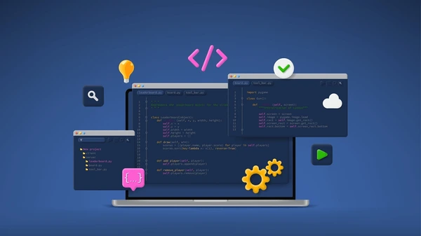
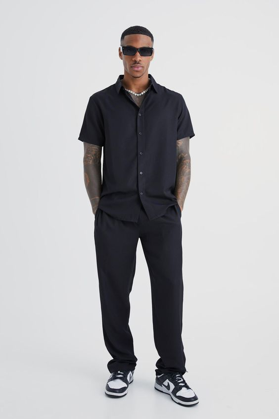

This website is a final year project for my Bachelor of Computer Applications (BCA) course. Please note that this is not a real commercial website, but rather a demonstration of my skills and learning throughout the course.
The Concept of this website revolves around men's fashion, offering a curated selection of items such as watches, shoes, shirts, jackets, and pants. The focus is on quality over quantity, providing a limited but stylish range of products for the modern man.
About the Author: This project is created by Parteek POKHREL, a student currently pursuing a Bachelor of Computer Applications (BCA) at Lovely professional university . This project showcases my interest and skills in web development, particularly in creating user-friendly and visually appealing online experiences.